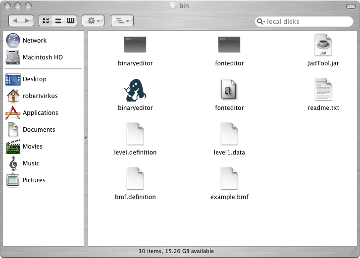
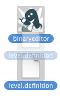
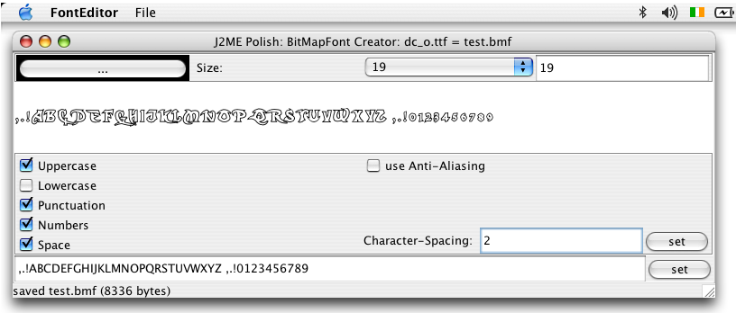

J2ME Polish includes standalone tools for specialized tasks in
the ${polish.home}/bin folder.

Use the binary-editor for creating and modifying binary data like level data files. It can also generate the Java/J2ME code for loading that data for you.
Please load the specification-file "level.definition" and the data-file "level1.data" from the "bin"-folder for getting a working example setup like shown in the following figure.
With the BinaryEditor you can easily adjust any kind of structured binary files like for example level data. The structure of the data is kept outside of the data-files themselves and has the extension ".definition". You can load definition-files with the "Open Definition" command or dragging and dropping the file on either the start-script or the editor like shown in following figure.

In each definition you will have several entries which can have arbitrary names like "playerX", "playerY" and so on. You can also define the type of each data-entry. There are predefined types available, but you can also combine your own types out of the basic types using "Edit -> Add Custom Type".
| Type | Value | Explanation |
|---|---|---|
| byte | -128..+128 | Standard Java byte value. |
| unsigned byte | 0..255 | Positive 8 bit value. |
| short | -32768..+32767 | Standard Java short value (uses 2 bytes). |
| unsigned short | 0..231-1 (2147483647) | Positive 16 bit value. |
| int | -231..231-1 | Standard Java int value (uses 4 bytes). |
| long | -263..263-1 | Standard Java long value (uses 8 bytes). |
| boolean | true, false | One byte representing true (1) or false (0). |
| ASCII-String | Text | A string consisting of ASCII characters with a max-length of 255 characters. The ASCII-String uses length + 1 bytes in the data file. |
| UTF-String | Text | Standard Java String. |
| PNG-Image | Image | A PNG image. Such images should usually be the last entry in a definition file, unless you generate your own code for loading the images. |
Each data entry also has a "count" value, which determines how often the entry is repeated. You can insert "static" numbers here, but you can also be a bit more flexible by using a calculation. In the calculation you can use any entry which is listed before the affected entry. So far you can only use simple terms using one operation on a number of entries. In this way you can for example define first a number of columns and a number of rows and then use "columns * rows" for calculating the number of cells of a table structure. Just click into the respective "count" field to start the editor for changing the count-value of the entry.
The BinaryEditor can also generate the J2ME code for loading data files with the current definition - just select "Code -> Generate Code".
The font-editor creates bitmap fonts (*.bmf) out of any true type fonts. Such
bitmap fonts can be used by the J2ME Polish GUI with the font-bitmap CSS-attribute or directly with the
de.enough.polish.util.BitMapFont
utiliy class.

Since the font-editor does no yet optimize the generated font-images, you might want to optimize the images outside of the editor: Just select "File -> Save PNG-Image As..." and edit the image in your favorite image editing program, e.g. The Gimp. You might also want to use PNG-image optimizer like PNG-Crush (http://pmt.sourceforge.net/pngcrush/) or PNG-Out (http://advsys.net/ken/utils.htm#pngout). When you're done, just reload the PNG-image by selecting "File -> Open PNG-Image".
You can also fine-tune every aspect of the bitmap-font by opening it in the BinaryEditor: select "File -> Open in Binary Editor" to do so.
<%include end.txt %>